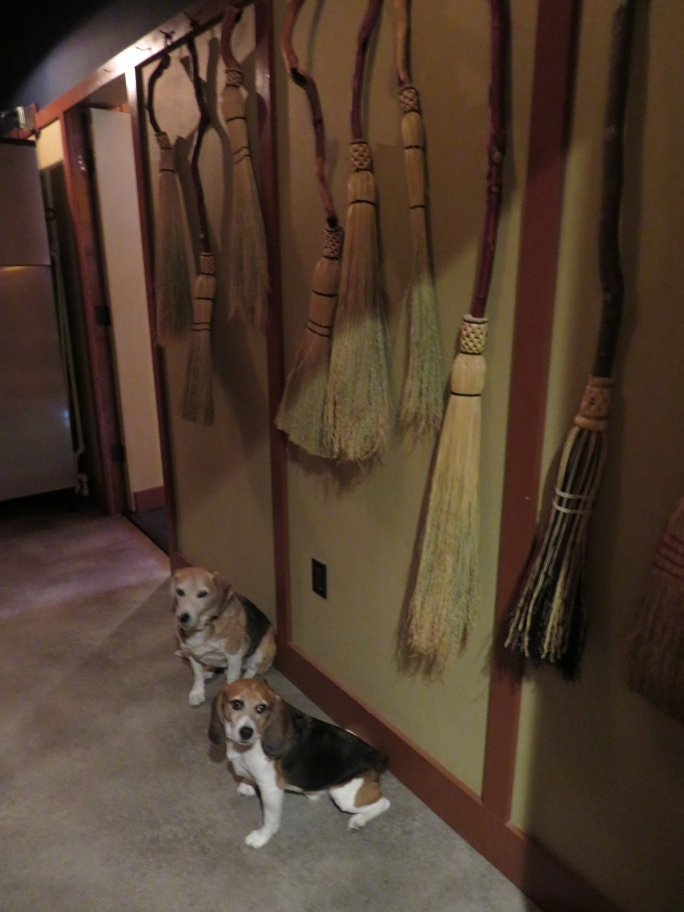

After an evening brewpub crawl in Bend we stayed at the McMenamins Old St. Francis School hotel, which among other remarkable features has a breakfast room hidden (behind a secret door which is open in this photo) in this rather nice broom closet.
The boys were not allowed in, and would not have enjoyed anyway, the hotel's most outstanding feature: a large soaking pool lined with beautiful art tile including four murals of St. Francis and animals.
Bend Huxley Beagle Oregon Wallace Beagle